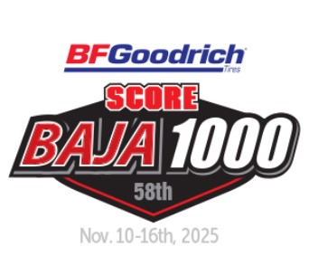
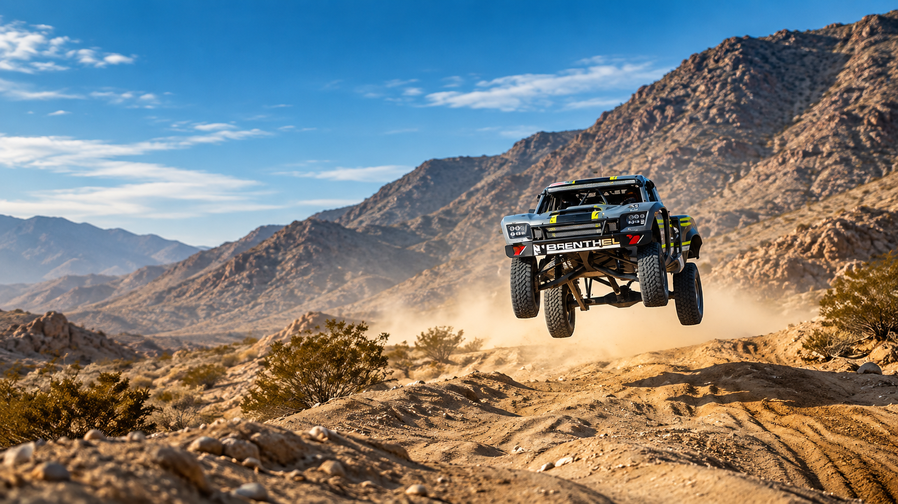
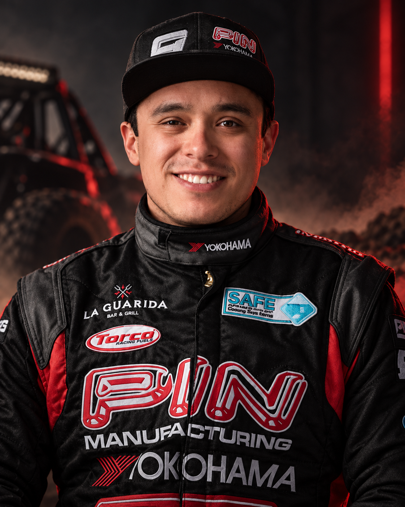
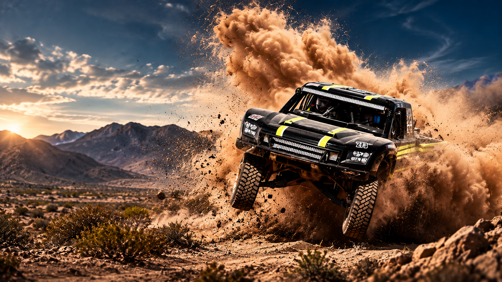
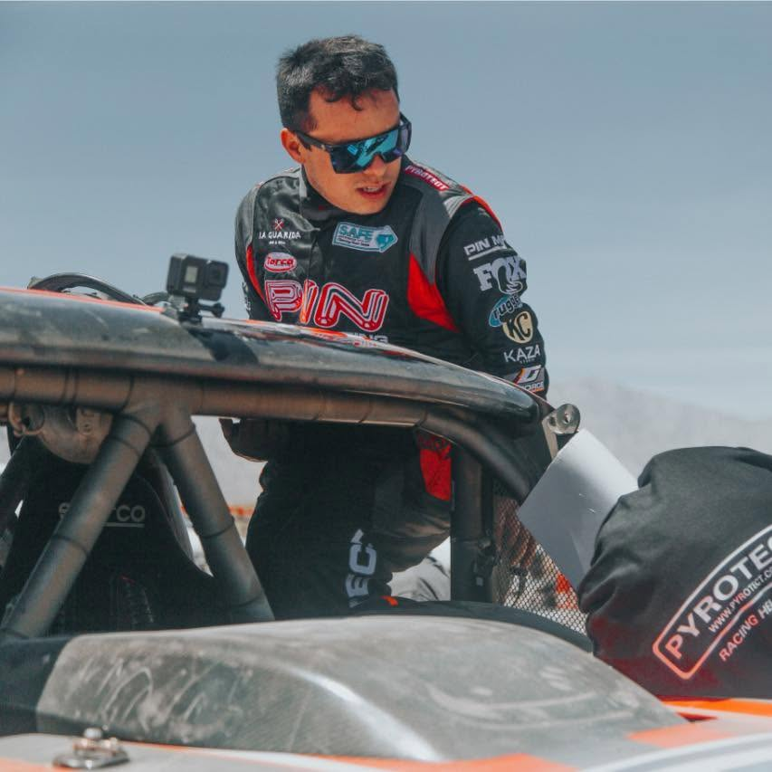
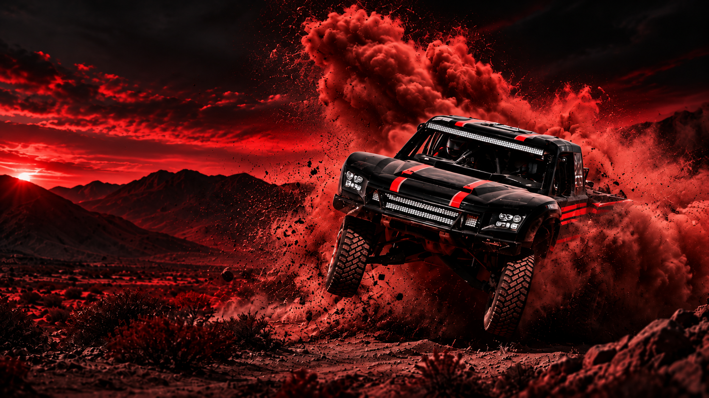

PRÓXIMA FECHA
Calendario por confirmar
→
APDALY OFFROAD

PILOTO MEXICANO DE OFFROAD
Ganador Baja 400 2026 · Trophy Truck Spec
Velocidad, disciplina y legado en el desierto.
SOBRE APDALY
Apdaly López es un piloto mexicano de offroad reconocido por su talento, disciplina y mentalidad competitiva. Su historia se ha construido entre preparación, equipo, resistencia y resultados en el desierto.
Este espacio está diseñado para presentar su trayectoria de una forma directa, visual y preparada para medios, aficionados y patrocinadores.
Conoce más sobre Apdaly

LOGRO RECIENTE
TROPHY TRUCK SPEC
Una carrera, un objetivo y un resultado histórico. Apdaly López se impuso en su categoría en la Baja 400 2026, sumando un nuevo capítulo a su trayectoria en el offroad.
Revive la carreraGALERÍA
PRÓXIMAS CARRERAS



PATROCINADORES Y ALIANZAS
Forma parte de este proyecto y lleva tu marca más lejos. El offroad es una plataforma de alto impacto, pasión y alcance.
Conviértete en patrocinadorCONTACTO
Formulario de demostración listo para integrarse con correo, CRM o WhatsApp.